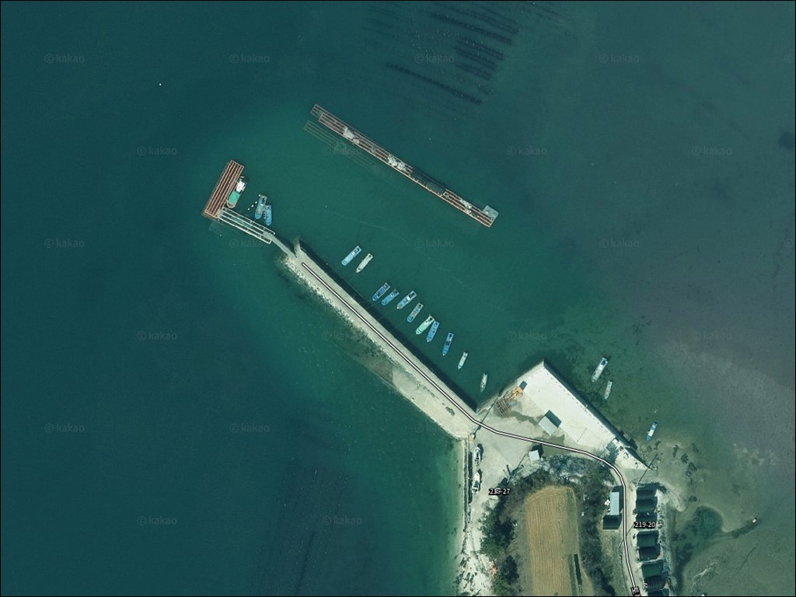
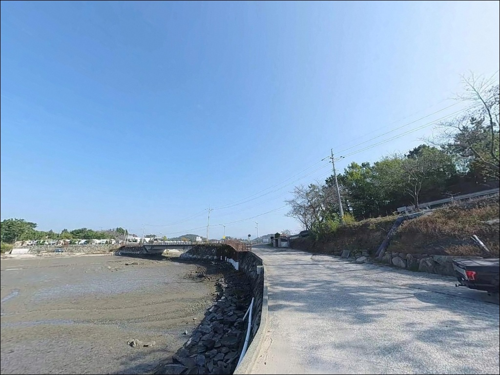
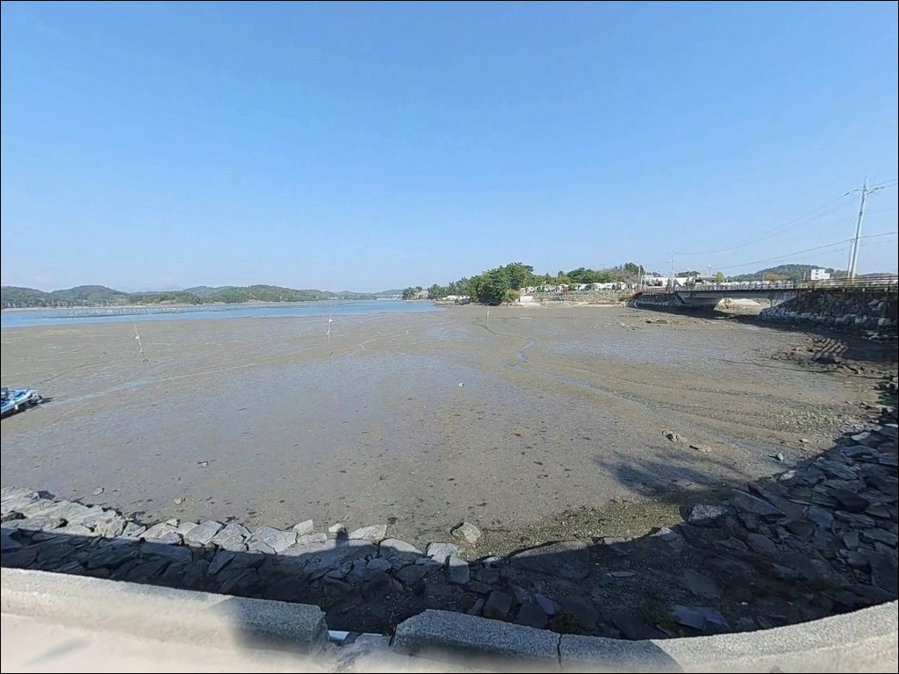
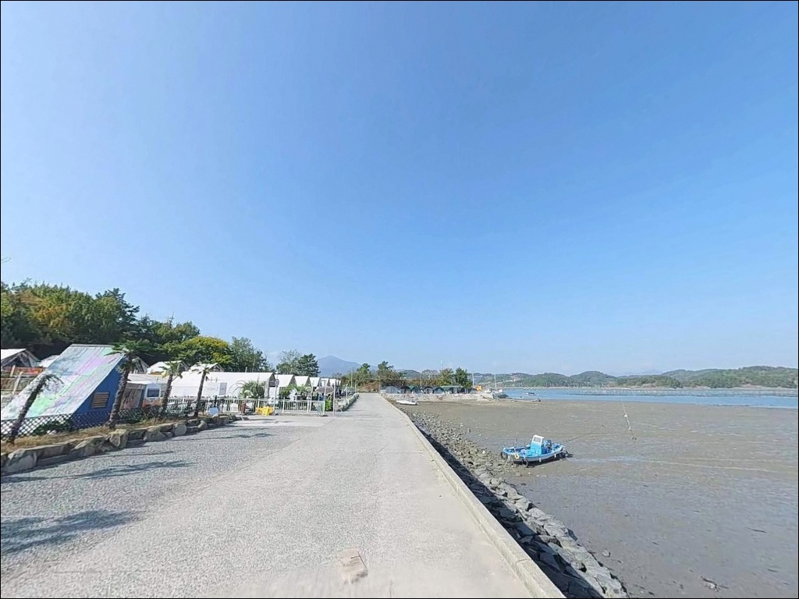
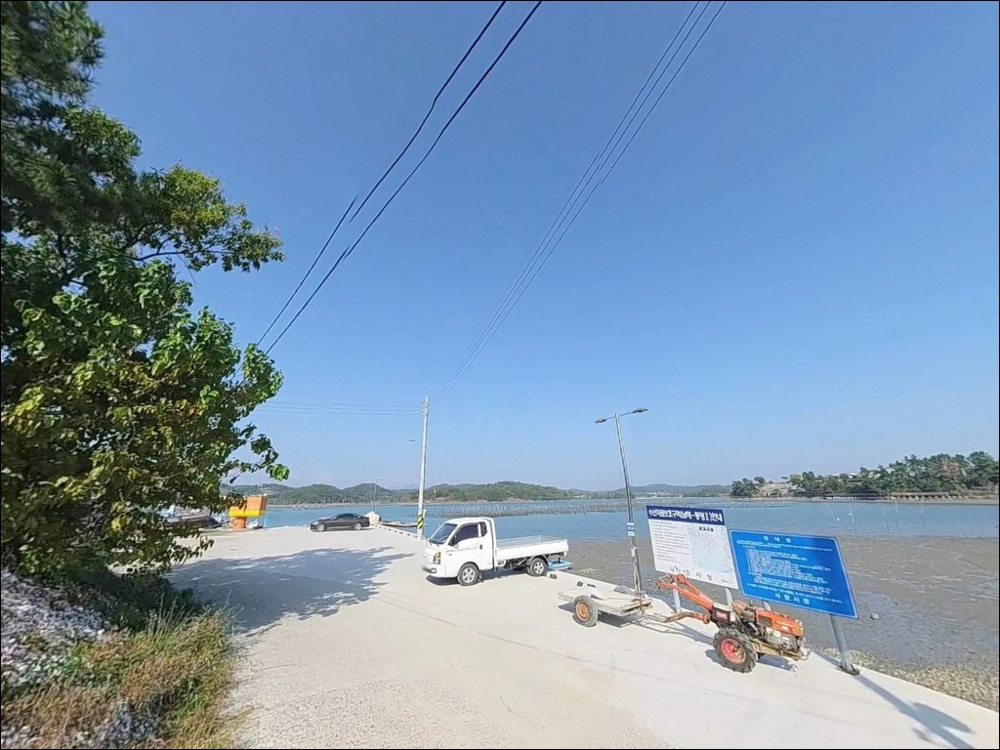
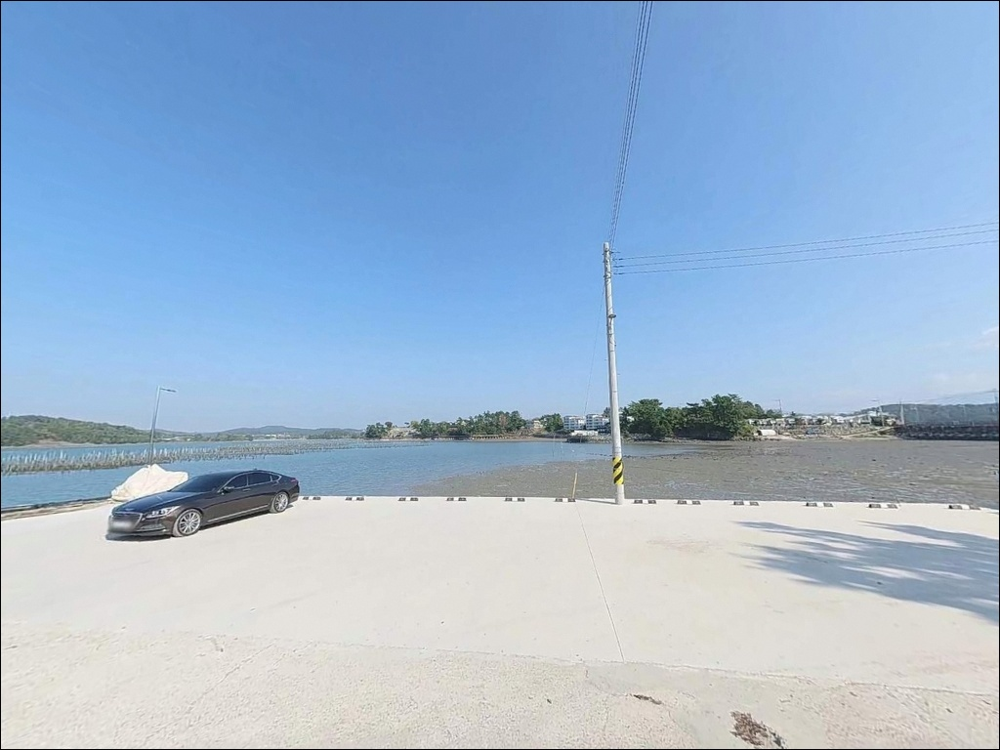
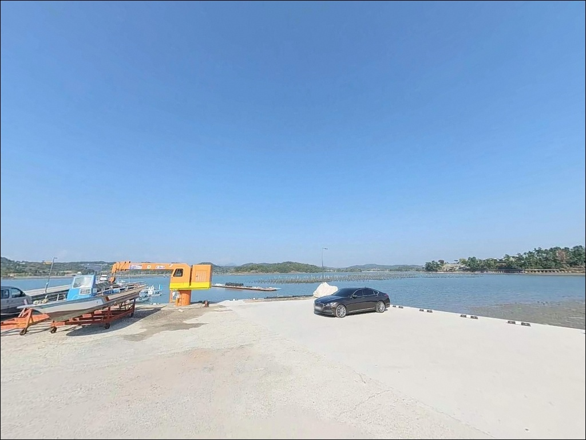
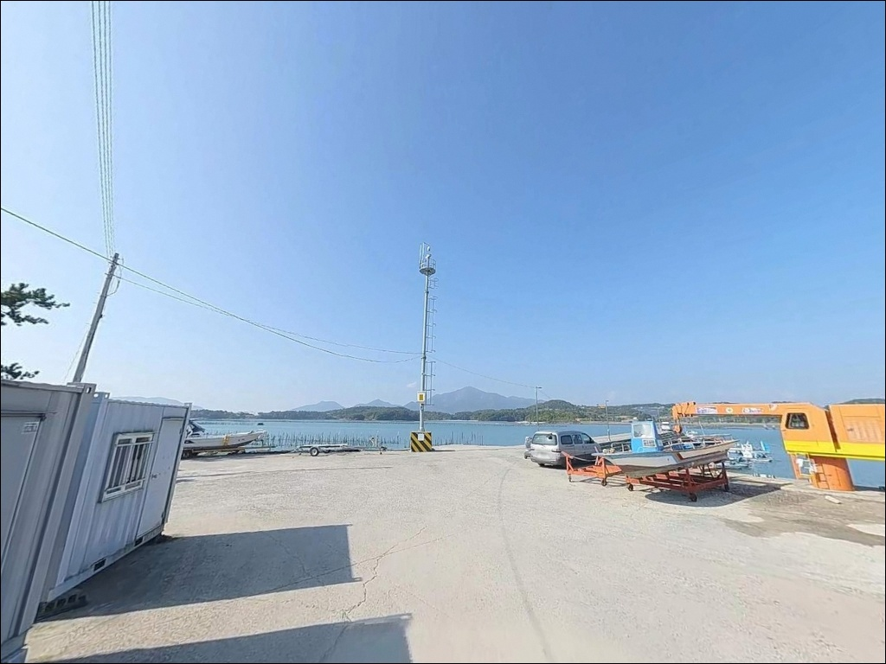
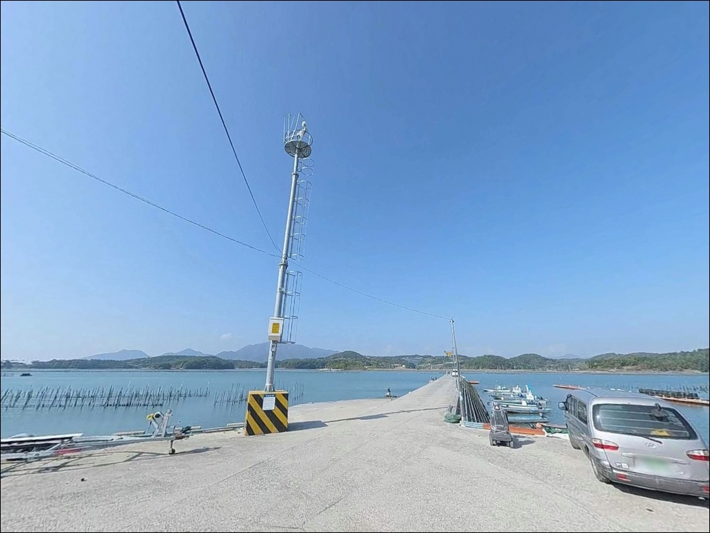

간조 때 갯벌만 보이던 비토선착장, 만조 수심 4m 형성될 때 시작한 원투낚시
이 페이지에는 광고(제휴 링크 포함)가 있으며, 광고 링크를 통해 구매하면 운영자가 판매 수익 또는 수수료를 받을 수 있습니다. 포인트 사진: 카카오맵 스카이뷰·로드뷰. 이 페이지의 지도·사진 이미지는 카카오맵의 실제 서비스 이미지와 다를 수 있습니다.


포인트 안내
비토선착장
경남 사천시 서포면 비토리 206-21
비토섬에서 선착장을 찾아가도
간조 때 도착하면 낚시 자리가 없습니다.
뻘 바닥 특성상 간조 시 선착장 주변이 전부 드러나고,
만조를 전후한 구간에서만 수심이 형성되는 구조이기 때문입니다.
물때를 모르고 방문하면 헛걸음이 되는
포인트입니다.
비토섬은 사천만 내측 해역에 자리한 섬으로,
비토교를 통해 육지와 연결되어 있습니다.
그 중에서도 거북교 진입 직후 우측에 위치한
비토선착장은 차량을 선착장 부지까지
직접 진입시킬 수 있어,
비토섬 낚시 포인트 중 접근성이 높은 편에 속합니다.
이 글은 비토선착장의 진입 환경, 차박 여건,
물때 판단 기준, 지형 기반 낚시 조건에 집중합니다.
조황 단정이나 특정 어종 보장은
이 글의 범위에 포함되지 않습니다.

1. 진입 동선과 차량 접근 조건
비토선착장으로 가는 기본 경로는
남해고속도로 곤양 IC에서 출발해
비토교를 건너 비토섬으로 진입한 뒤,
거북교 방향으로 우회전하는 동선입니다.
거북교를 통과하고 나면 곧바로 오른쪽에
선착장 진입로가 나타납니다.
진입로는 토리글램핑장 입구와 공유하는 구조로,
차 1대가 통과할 수 있는 수준의 폭입니다.
포장도로로 이어져 있고 급경사 구간은 없지만,
좁은 진입로 특성상 초행길이라면
출발 전에 위성지도로 동선을 한 번 확인해 두는 것이 좋습니다.
선착장 부지 내에서 회차가 가능합니다.
주차는 선착장 진입 직후 평탄한 공터와
거북교 북단 교각 주변 도로변 여유 공간을 활용합니다.
대형 SUV나 캠핑 장비를 실은 차량이라면
공터 여유 면적을 먼저 확인하고
자리를 잡는 순서를 먼저 결정하는 편이 안전합니다.

2. 차박 환경과 야간 체류 여건
비토선착장은 사천만 내만 구조 덕분에
외해 파도 영향이 거의 없는 편입니다.
내만이라 수면이 잔잔하고 바람 영향도 적어,
낚시를 마치고 하룻밤 머무는 용도로는
조용한 환경이 갖춰진 편입니다.
다만 선착장 바로 인접해 토리글램핑장이 위치해 있어,
야간에도 타인과 시야가 겹칠 수 있습니다.
완전한 독립 공간을 원하는 차박이라면
기대와 다를 수 있으므로,
선착장 공터 여유 공간을 먼저 확인하고
자리를 결정하는 것이 좋습니다.
비토섬 선착장 일대는 가로등 밀도가 낮은 편입니다.
야간 낚시나 차박 체류 시에는
헤드랜턴을 반드시 지참해야 하며,
선착장 발판은 갯바위보다 미끄럼 위험이 낮지만
야간 발판 확인은 기본 안전 절차입니다.


3. 주변 편의시설 및 인프라 현황
비토선착장 인근에는 확정 가능한
편의점이나 식당이 없습니다.
비토섬은 어촌 마을 구조이므로,
식수·얼음·낚시 소품·연료는
비토교를 건너기 전 사천 시내 또는
서포면 소재지에서 미리 갖추는 편이 현실적입니다.
반경 3km권에는 비토해양낚시공원이 위치합니다.
유료 낚시 시설로, 별학도 방파제 구간을
안전하게 이용할 수 있는 시설을 갖추고 있습니다.
낚시공원 내 매점도 운영되므로
부족한 소품이 생겼을 때 활용할 수 있습니다.
반경 10km권으로 나가면
삼천포용궁수산시장 방면에서
수산물 구매와 식사가 가능합니다.
장거리 출조라면 이 동선을 귀가 경로에
포함해 두는 편이 효율적입니다.

4. 물때 중심으로 준비해야 할 방문 전 체크사항
비토선착장에서 가장 먼저 확인할 것은
물때입니다.
뻘 바닥 특성상 간조 시 선착장 주변 바닥이
전부 드러나는 구조로,
낚시가 가능한 구간은
중들물 이후부터 만조, 초썰물까지입니다.
바다타임에서 사천만 기준 물때를 확인하고
입장 시각을 맞춰 출발해야 합니다.
간조와 만조의 수심 차이가 크고
갯벌 노출 구간이 넓기 때문에,
물때 계산 없이 도착하면
낚시 자리 자체가 사라지는 상황이 됩니다.
또한 비토섬 내 일부 갯벌 구간은
간조 시 진입 시 고립 위험이 있으므로
갯벌 방면으로의 임의 진입은 삼가야 합니다.
뻘 바닥 지형 특성상 밑걸림 손실이 잦으므로
여분 채비는 넉넉하게 챙기는 것이 좋습니다.
어선 출입이 이루어지는 선착장이므로
계류 로프와 어구에 채비가 걸리지 않도록
자리 선정 시 주의가 필요합니다.

5. 지형 기반 낚시 여건 분석
비토선착장의 핵심 특성은
뻘 바닥 기반의 내만형 지형입니다.
선착장 앞은 완만하게 수심이 깊어지는 구조이며,
만조 기준 선착장 끝단에서
수심 4m 내외가 형성됩니다.
강한 조류보다는 물때에 따른 수위 변화가
이 포인트의 조건을 결정하는 핵심 변수입니다.
거북교 교각 방향으로 약한 조류 흐름이 발생하며,
선착장 끝단과 좌우 측면은
상대적으로 수심 변화가 생기는 구간입니다.
사천만 내측 해역 특성상 이 일대는
전어, 도다리, 붕장어, 감성돔 등
다양한 생활어종이 서식하는 해역으로,
비토선착장도 같은 해역 조건에 속합니다.
뻘 바닥이 넓게 형성된 지형 특성상
에깅 적합도는 낮습니다.
수심 4m 이하에 뻘 바닥이 주를 이루기 때문에
에기 채비 운용이 어려운 구조입니다.
에깅을 원한다면 비토섬 내
수심 5m 이상을 확보하는 다른 포인트로
이동하는 편이 낫습니다.
가기 전에 최신 조황은 꼭 검색해 보시기 바랍니다.


6. 비토선착장 지형에 어울리는 낚시 스타일
이 포인트에서 가장 잘 맞는 낚시는
원투낚시입니다.
뻘 바닥과 완만한 수심 구조는
원투 채비가 바닥을 탐색하기에 적합한 조건이며,
선착장 끝에서 거북교 방향 또는
본섬 쪽 물골을 향해 캐스팅하는 방식이 유효합니다.
붕장어, 도다리, 망둥어가
원투 대상 어종으로 꼽힙니다.
찌낚시도 이 포인트 구조에 어울립니다.
만조 때 확보되는 수심 4m를 활용해
선착장 좌우 연안을 흘리는 방식이 기본입니다.
봄과 가을에는 감성돔을 노리는 찌낚시가
이 일대 선착장에서 이루어지는 방식이며,
조류가 거의 없는 내만이기 때문에
채비가 정해진 방향으로 흐르지 않아
조류 흐름을 만드는 타이밍을 찾는 것이 중요합니다.
소형 루어는 보조적으로 활용할 수 있습니다.
만조 전후 선착장 코너부에서
소형 지그헤드 채비로 뻘 바닥층을 천천히 긁는 방식으로
쥐노래미나 볼락을 기대할 수 있습니다.
수심이 얕은 구간에서는
무게 없이 가볍게 운용하는 것이 손실을 줄이는 방법입니다.

7. 대안 포인트와 플랜 B 동선
비토선착장 물때가 맞지 않거나
공터에 자리가 없을 경우,
비토섬 내에서 먼저 고려할 대안은
수협공판장 방파제입니다.
비토선착장에서 약 1.5km 거리에 있으며,
비토섬에서 가장 규모가 큰 방파제 구조입니다.
만조 수심이 5~6m로 비토선착장보다 깊어
물때 제약이 비교적 덜한 편입니다.
사천만 쪽 물골 영향을 직접 받는
비토섬 북쪽 방파제도 대안 포인트로 꼽힙니다.
비토선착장에서 약 1km 거리이며,
방파제 길이 약 100m 구조입니다.
좁은 농로로 진입하는 구간이 있어
진입 전 도로 폭 확인이 선행되어야 합니다.
비토섬을 벗어나 삼천포 방면으로 나가면
실안해안도로 일대에 해안 주정차 공간이 다수 있습니다.
일몰 명소로 알려진 이 해안도로는
차박을 겸한 낚시 동선으로도 활용하기 좋은 구간입니다.

물때만 맞추면 비토섬이
달라 보이는 포인트입니다
원투낚시나 찌낚시를 즐기면서
잔잔한 내만 환경을 선호하는 낚시인이라면
비토선착장의 지형 조건은
충분히 맞는 구조입니다.
사천만 내측 해역의 생활어종 다양성과
차량 직접 진입이 가능한 접근성이
이 포인트의 강점입니다.
반면 에깅이나 루어 위주의 낚시를 원한다면
비토선착장보다 수심이 깊은 다른 포인트가 낫습니다.
그리고 물때 계산 없이 방문한다면
갯벌만 보다 돌아오는 상황이 반복될 수 있으니,
바다타임 물때 확인, 여분 채비 준비,
진입로 사전 확인 이 세 가지를
출발 전에 갖추는 것이 기본입니다.
토리글램핑장이 인접해 있어
차박 대신 정식 숙박으로 전환하는 선택지도 있고,
비토국민여가캠핑장을 함께 계획에 넣으면
낚시와 차박을 모두 챙기는 출조가 될 수 있습니다.